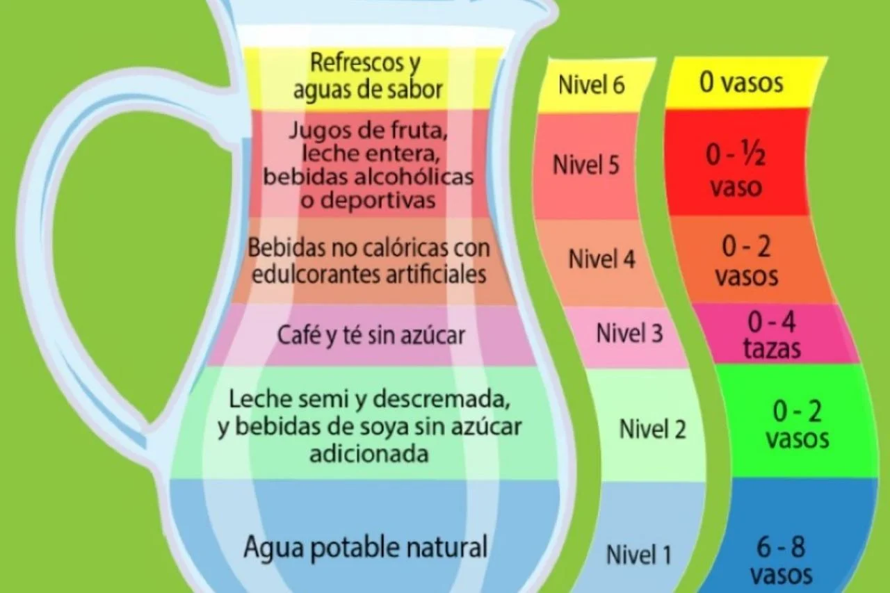

La hidratación “consiste en reponer los líquidos corporales que perdemos a través del sudor, al exhalar aire y
al eliminar residuos” (SSM, 2023).
Al hidratarte preferentemente elige tomar agua simple, la cual aporta al funcionamiento adecuado de tu organismo. Recuerda que el exceso de bebidas azucaradas puede tener repercusión en tu salud. “De acuerdo con la Organización Mundial de la Salud (OMS), el agua es esencial para el cuerpo humano en cualquier etapa de la vida porque ayuda a regular la temperatura corporal, manteniendo la piel hidratada y elástica, lubricando articulaciones y órganos y manteniendo una buena digestión”.
“El agua necesaria para cubrir los requerimientos diarios proviene de los alimentos y bebidas que se ingieren, además de la que se produce por el metabolismo, por lo anterior es importante que todos los días se considere tomar mínimo 2 litros de agua como parte de nuestros hábitos” (Secretaría de Salud, 2017).
Una correcta hidratación permite que el organismo funcione adecuadamente. El agua participa en procesos vitales como:
La deshidratación, incluso en niveles leves, puede causar dolor de cabeza, cansancio, falta de concentración, mareos y disminución del rendimiento físico y mental.
(audio sacado del canal "IBT Group Corporativo")
(imagen tomada de METEORED)